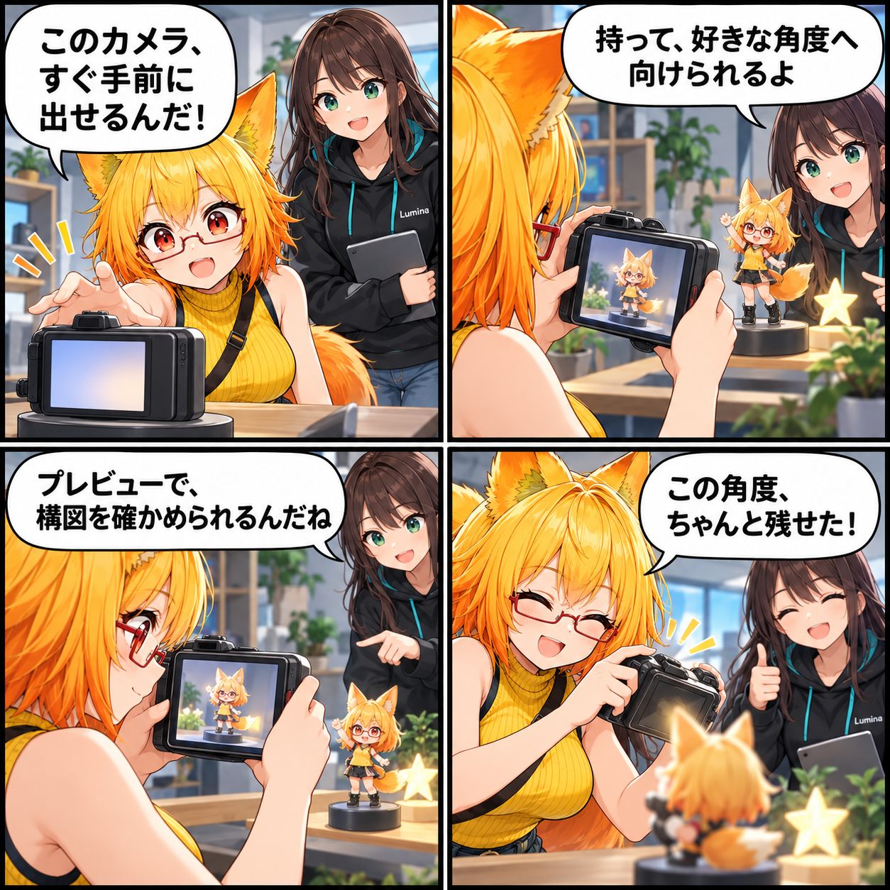

2026.10.22 / Development Log / Feature Spotlight
閑話休題：手に持つカメラで、好きな角度を切り取る
今回は新しい実装実績ではなく、VRASで使えるVR物理カメラを紹介します。VR空間へ出したカメラを手に持ち、好きな位置と角度から構図を確かめて撮影できる既存機能です。
今回は feature-spotlight（閑話休題） です。集計期間は2026-10-21 03:00:00 JSTから2026-10-22 02:59:59 JST、参照ブランチはViewerの
main です。集計終了時点のHEADは f3a72c3dd1a8d6cbd3a5e3c7818394d653668929、期間内コミットは0件でした。未コミット差分は対象期間の実績と確認できないため含めず、現在実装済みの機能を紹介します。
VR空間へ、カメラを出す
VRASでは、物理カメラの小道具をVR空間の目の前へ出せます。使い始めるときに手元へ置き直せるので、最初から遠くの機材を探す必要はありません。
持って決める、撮りたい角度
カメラは手に持って、アバターとの距離や高さ、向きを変えられます。選択中のアバターへ向ける操作もあり、構図を探すときの出発点として使えます。
プレビューと本番を、役割で分ける
カメラのプレビューは構図を確認するためのものです。常に描画するプレビューは撮影本番と分け、設定や描画品質に合わせて扱います。手に持った状態でコントローラーのトリガーを引けば、そのカメラから撮影できます。
4コマの裏話
今回は、机の上のカメラを見つけてから、手に持ち、小さなアバターをフレームへ収めるまでを描きました。今日この機能を実装したという意味ではなく、VRASにある撮影の入口を小さな寸劇にしています。
まとめ
VRASの物理カメラは、VR空間へ出し、手に持ち、プレビューで構図を見ながら撮影できる既存機能です。撮りたい一枚を、空間の中で探すための道具として使えます。
本日のひとこと
手に取った角度が、そのまま一枚になる。